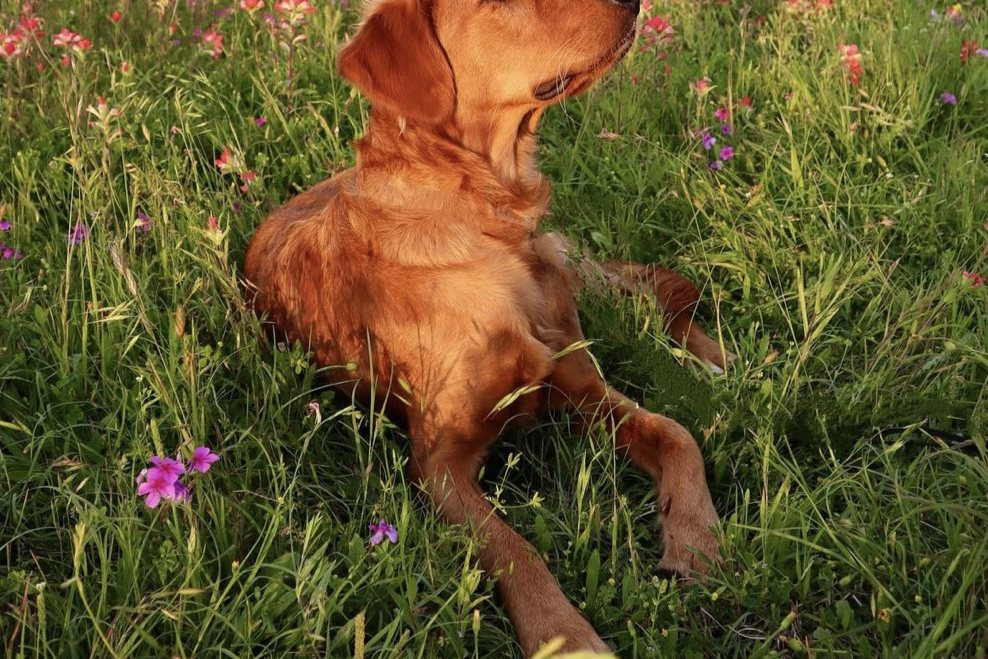
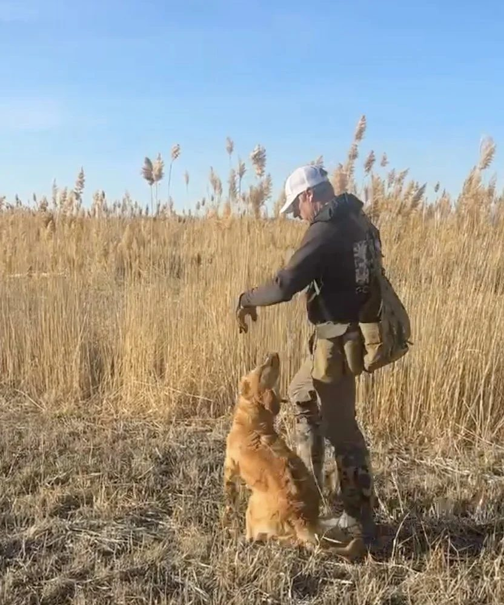
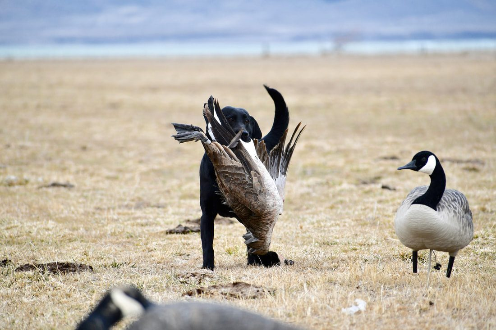

If your dog is scared of fireworks, desensitization does not mean exposing the dog to loud fireworks over and over until it stops reacting.
That can make the problem worse.
The way I approach sound desensitization is much more gradual.
Start at a level where the dog is comfortable.
Keep the dog in a positive environment.
Watch the dog’s demeanor.
Then increase the sound only when the dog stays relaxed and acts normally.
The dog sets the pace.
Start below the dog’s fear threshold
The biggest mistake people make with desensitization is starting too loud.
If the dog is already tense, frozen, hiding, or shutting down, the sound is too intense.
You want to begin below that point.
The dog should still be able to:
- Eat.
- Play.
- Retrieve.
- Relax.
- Move around normally.
- Interact with you.
- Maintain the same energy and personality.
If the dog cannot do those things, lower the intensity.
Controlled sound is different from live fireworks
Live fireworks are unpredictable.
They vary in:
- Volume.
- Distance.
- Timing.
- Direction.
- Frequency.
That makes them difficult to use as a training tool.
Recorded sound gives you more control.
You can choose:
- When the sound starts.
- How loud it is.
- How long it plays.
- When to stop.
- When to repeat it.
That control is important for gradual desensitization.
Pair the sound with something positive
I like the dog to be doing something it enjoys while sound is being introduced.
That might be:
- Eating.
- Playing.
- Retrieving.
- Relaxing.
- Spending time with the family.
- Working around birds if appropriate.
The sound should not be the main event.
The positive activity should stay more important.

Start quietly
Begin with the sound at a comfortable level.
Do not turn it up to a realistic fireworks volume right away.
The dog should barely care about it.
You may notice the dog hear the sound and then immediately go back to what it was doing.
That is much better than a dramatic reaction.
Watch the dog’s demeanor
This is the main rule.
The dog does not have to run away to be uncomfortable.
Watch for:
- Becoming still.
- Losing interest in food.
- Stopping play.
- Stopping a retrieve.
- Becoming clingy.
- Lowering its energy.
- Watching the speaker.
- Leaving the room.
- Becoming tense.
- Acting differently than normal.
If the dog’s demeanor changes, back up.
Increase sound gradually
Once the dog is completely comfortable at one level, you can gradually increase the intensity.
Do not make large jumps.
The goal is not to reach maximum volume quickly.
The goal is to create repeated experiences where the dog hears the sound and remains comfortable.
That may take days.
It may take weeks.
Some dogs may need longer.
- 1Start below threshold
- 2Keep the activity positive
- 3Watch demeanor
- 4Increase only if the dog stays itself
Do not progress by the calendar
Do not decide:
“We have done this for three days, so now it is time to turn it up.”
The dog’s behavior should determine progression.
If the dog stays relaxed, you can move forward.
If the dog’s behavior changes, go back.
If the dog reacts, go back to the previous level
A reaction does not mean the entire process failed.
It means the current level was too much.
Lower the volume or return to the previous step.
Stay there until the dog is comfortable again.
Then try moving forward later.
Do not use fireworks night as a training session
The Fourth of July is usually not the time to begin desensitization.
There may be too much uncontrolled noise.
If the dog is already frightened, trying to train through a full night of fireworks can overwhelm the dog.
Desensitization works better when you can control the sound.
Use quieter periods to practice.
Keep real fireworks exposure as low as possible
If your dog is already scared of fireworks, try not to add unnecessary exposure.
During fireworks events, reduce the intensity where possible.
That may mean:
- Bringing the dog indoors.
- Using a quieter room.
- Closing windows.
- Keeping normal routines.
- Giving the dog access to a familiar resting area.
The goal is not to force the dog to face the noise.
Can you use food during desensitization?
Yes, if the dog is comfortable enough to eat.
Food can be part of a positive experience.
But if the dog normally loves food and refuses it once the sound begins, that is useful information.
The sound may be too intense.
Lower the level.

Can you use retrieving or play?
Yes.
For dogs that love retrieving or play, those activities can be helpful.
The dog should stay engaged.
If the dog stops retrieving or loses interest in play when the sound increases, back up.

What if the dog is a hunting dog?
For hunting dogs, fireworks fear deserves extra attention.
A dog that becomes strongly fearful of loud, sudden noise may later have more difficulty with gunfire.
That does not mean every fireworks-sensitive dog will become gun shy.
But I would not ignore the reaction.
Once the dog is comfortable with controlled sound again, live gunfire should still be introduced gradually and at a distance.
What if the dog is already gun shy?
If the dog already has a known gunfire issue, I would be even more conservative.
Do not use loud fireworks recordings as another test.
Start at a comfortable level.
Keep the progression controlled.
If needed, use a structured gunfire-desensitization program before returning to live field work.
How Gunshy Fix fits into sound desensitization
Gunshy Fix was created around this same general principle.
It begins with calming music and gradually introduces gunfire recordings.
The dog stays on each lesson until its demeanor remains completely normal.
Then it moves forward.
If the dog reacts, you go back.
That same pattern is what I would use for any controlled loud-noise desensitization:
Start low. Stay positive. Watch the dog. Move forward only when the dog is comfortable.
How long does fireworks desensitization take?
There is no exact timeline.
Some dogs may improve fairly quickly.
Others may take weeks or months.
Dogs with severe noise fear may need much more time.
The goal is not speed.
The goal is a dog that can hear the sound and continue acting normally.
When should you get professional help?
Consider professional help if:
- The dog panics around fireworks.
- The dog remains shut down long after the noise stops.
- The dog refuses food or play even at low sound levels.
- The dog begins reacting to gunfire too.
- Progress has completely stalled.
- You are unsure whether the dog is comfortable.
- The dog is a hunting dog that needs to transition back to live gunfire.
A professional trainer can help with progression and with the transition from recorded sound to real-world field situations.
The main rule
If you remember one thing, remember this:
Desensitization should not look like forcing the dog to endure fear.
Start at a level where the dog can remain comfortable.
Keep the experience positive.
Increase the sound gradually.
If the dog’s demeanor changes, back up.
That is how I would approach it.
Start with a controlled sound progression
Gunshy Fix provides a structured way to introduce gunfire recordings gradually in a controlled environment.
The lessons combine calming music with progressively introduced gunfire so the dog can move forward according to its comfort level.